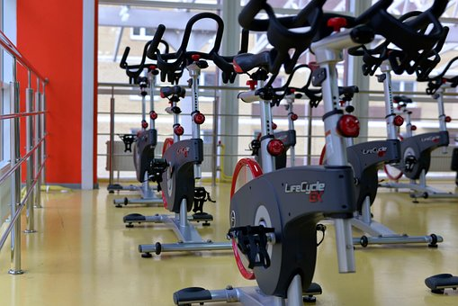
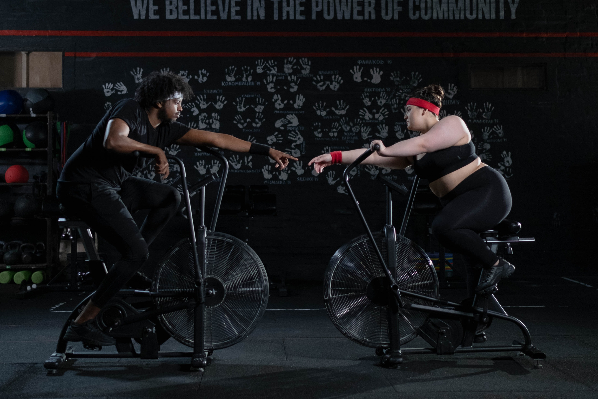

For people who wants to lose weight, we have the best cardio machines to help you use your extra calories. Aerobic exercise includes walking, jogging, running, cycling, and swimming.

We aim to burn fat by exercising while sending oxygen to tissues and cells. To lose 1 kg of fat in a month, you need to consume about 7,200 kcal per month. The gym has a lot of aerobic exercise machines (cardio machines). It can be done indoors even when the weather is bad, so it is indispensable for those who want to burn fat on a diet or want to lose weight.

The most popular cardio machine is the treadmill (running machine). A treadmill, a must-have in any sports club, is a machine that allows you to walk or run indoors. The latest treadmills not only have a TV, but you can also watch video services such as YouTube and Netflix by connecting to the Internet, so you can continue exercising without getting bored.

Going to gym is changing your life
Want to have a toned body! Want to build my muscles efficiently! Want to the body of my dreams! Want to be like a model! We will make your dream come true!!
Join Us